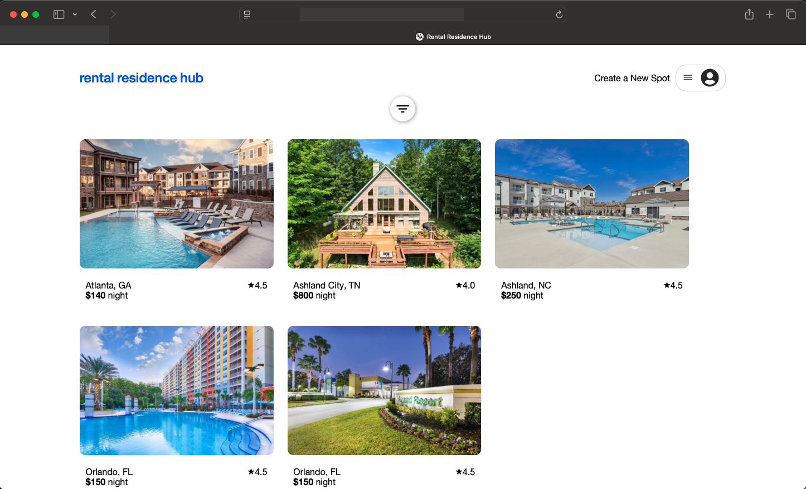
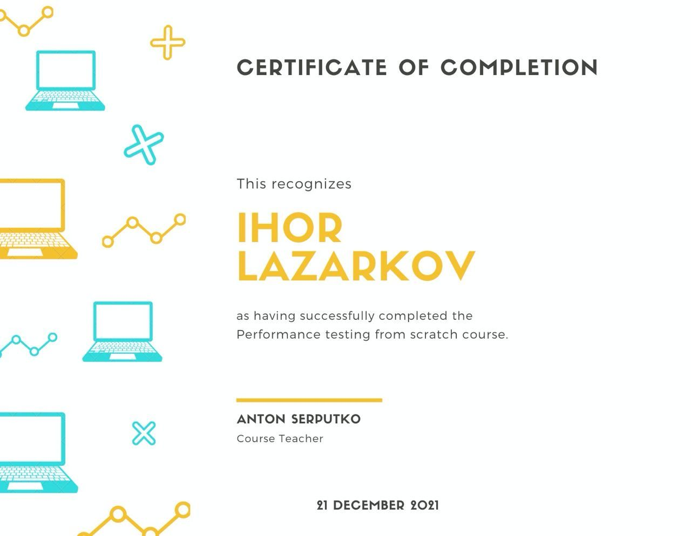

Ihor Lazarkov
Fullstack Developer
Automation Test Architect

phone
+1 (615) 506 - 9411

email
ilazarkov@gmail.com
ABOUT ME
Versatile and results-driven Fullstack Software Developer with a robust foundation as a Senior Software Development Engineer in Test (SDET). Bringing over 8 years of hands-on experience in software development, automation frameworks, and deployment, coupled with 15 years of expertise in quality assurance.
WHAT I DO
 Web Development
Web Development
As a client-focused Full Stack Developer, I am passionate
about designing and implementing innovative programmatic
solutions for both front-end and back-end development. My goal
is to deliver efficient, user-friendly, and scalable
applications tailored to meet client needs.
Development in Test
As a Developer in Test, I bridge the gap between development
and quality assurance by leveraging advanced testing
techniques and automation frameworks. I identify issues early,
optimize testing processes, and deliver actionable insights to
ensure reliable, high-performing software. With attention to
detail and a collaborative approach, I help maintain the
highest standards of software quality.
 DevOps
DevOps
As a DevOps specialist, I integrate software projects into
CI/CD pipelines by creating and maintaining efficient build
scripts to automate workflows for building, testing, and
releasing applications. I schedule script executions,
configure custom triggers, and ensure seamless deployment
processes to enhance delivery speed and reliability
Automation Test
As a Test Automation Engineer, I design and implement
automation frameworks to perform functional testing of
end-to-end scenarios for both front-end and back-end
applications. By analyzing functional requirements, I create
robust and efficient test case designs to ensure comprehensive
and reliable automated testing.
Automation Test Engineer
Work as senior technical automation test engineer in a team of 5
automation test engineers. Responsible to deliver automation
test framework for functional and integration testing for three
projects using Java, Selenium WD, Cucumber, RestAPI, JUnit.
Integration of automation framework into CI/CD by tailoring
Jenkins scripts and creation of schedulers. Communication with
product owners, domain knowledge experts to learn functionality,
demo of completed work, gather feedback and deliver
improvements. Execute tests, perform issue analyze, bug fix in
automation framework, provide test evidence.
- Contribute to automation test framework, architect solutions, best practices utilizing GRASP, GoF, LISP principles for OOP and both functional and programming
- Meticulous analyze code base of deligated projects by attentive read the code base and execution of tests to improve stability, remove false positive tests, decrease redundant code base
- After meticulous refactoring false-positive tests were removed, cleared 1800 lines of code, increased test execution from 40 minutes to 10 minutes resulting in drastically improved overall quality of automation test framework
- Established trust of the teams in automation testing and its results by holistic approach to automation test engineering
- Deserved key role in technical leadership by provide technical mentoring and solutions within the team
- Participate in conferences across company to share with best practices and innovative approaches in automation testing

Rental Residences Hub
The application designed to help users find vacation rentals effortlessly. Intuitive use, filtering of available properties, view detailed descriptions and reviews.
Status:
💚
react
react router
html
css
express js
sequelize
sqlite
postgresql
Post Secondary Education
App Academy, CA
Fullstack Developer
April 2024 - PresentCourses
Node.JS application Development
Feb 2023 See certificateIntroduction to Node.Js
Dec 2022 See certificate
